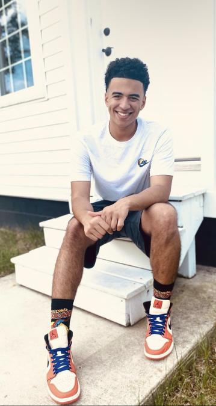

I’m a student who's studying SImulation, Animation and Game design at Eastern Michigan University. My interest first started when I took my first game design class back in my senior year of highschool. Since I like art and coding I figured this major would be perfect for me. I've programmed projects in Game maker studio 2, and Unity. And have some modeling experience in 3ds Max and Autodesk Maya.
